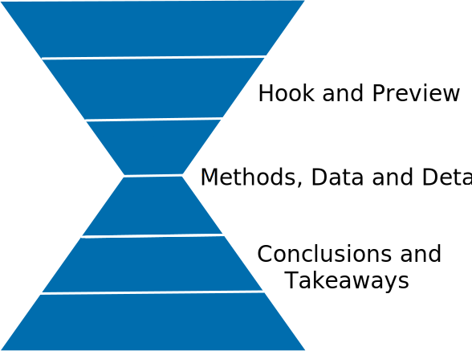
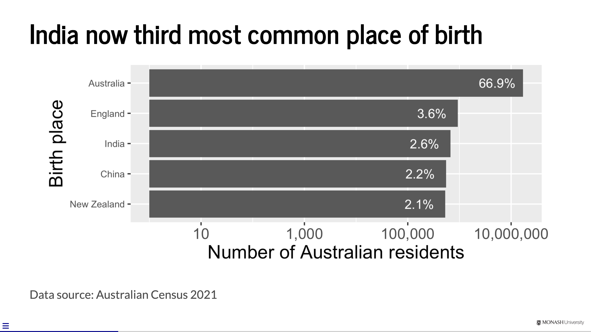
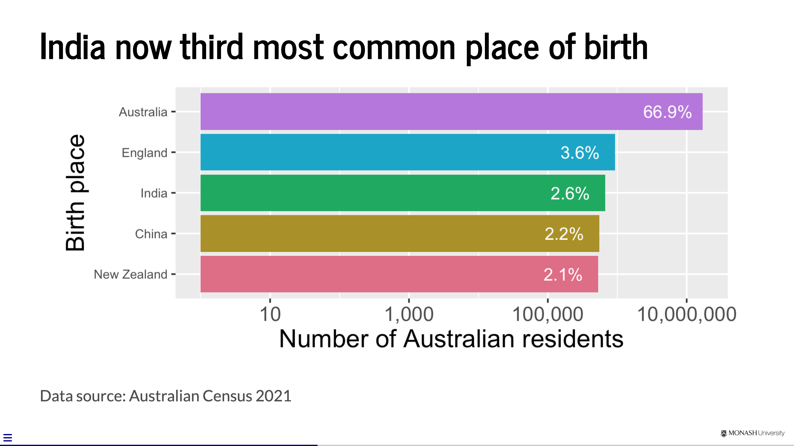
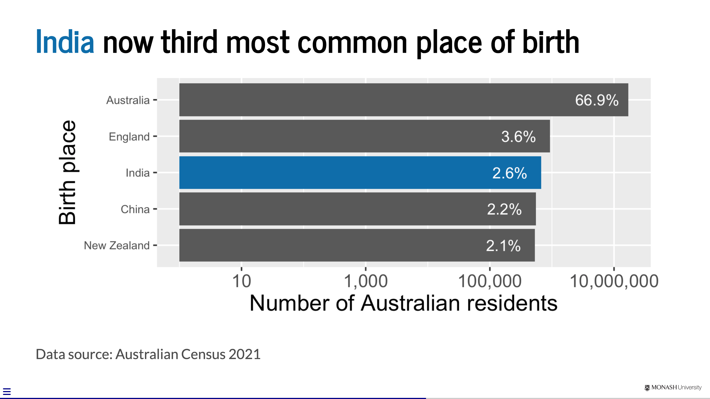
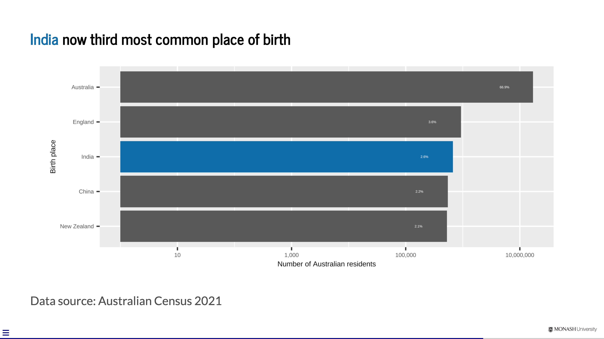
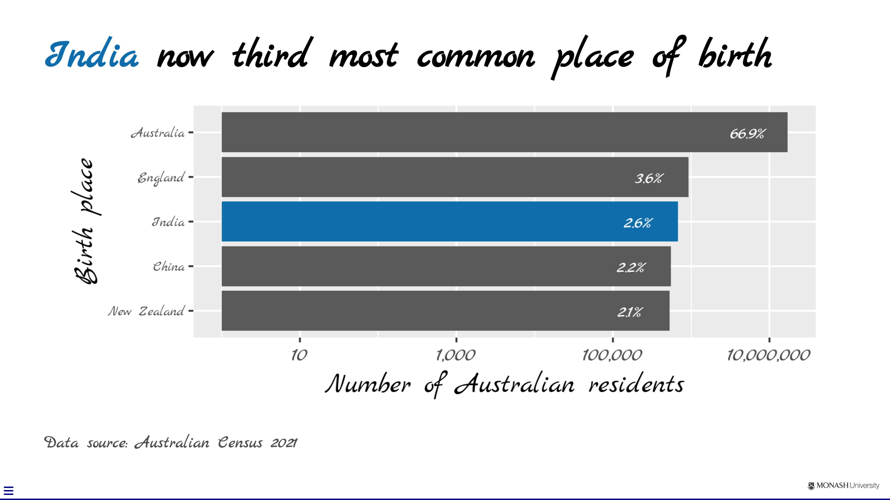
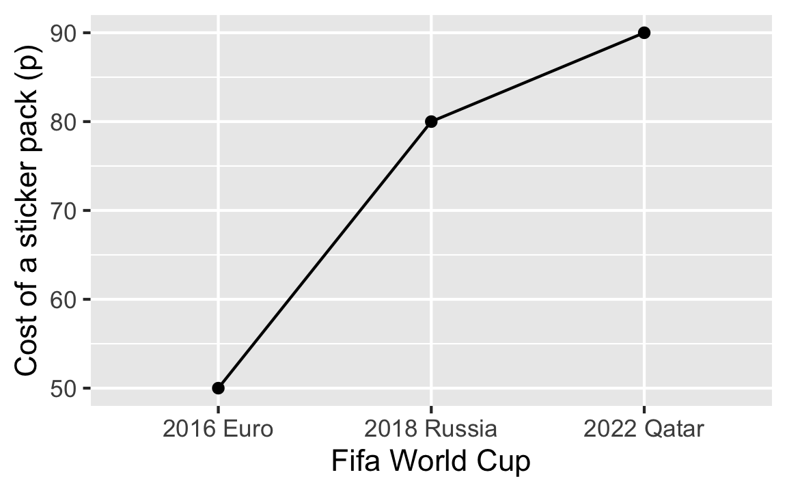
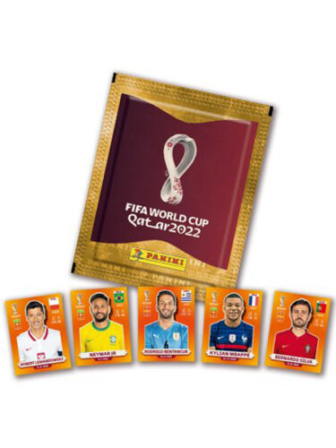
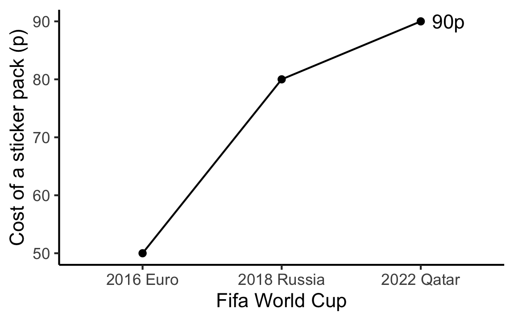

| Type | 3 mins | 10 mins | 30 mins | 60 mins |
|---|---|---|---|---|
| Informal meeting | ||||
| Lightning talk | ||||
| Seminar | ||||
| Sales pitch | ||||
| Lecture |
✓
|
|||
| Other |
ETC5523: Communicating with Data
Captivating statistical presentations
Lecturer: Michael Lydeamore
Department of Econometrics and Business Statistics
Aim
- Apply cognitive principles for better presentation slides
- (Re)structure and (re)design presentation slides to effectively communicate information in the data
- Develop slides with Quarto revealjs
Why
- After data analysis, you have to market the results or persuade others to take action because of the results.
- We are focussing on slides as visual and voice is better to communicate data than voice alone.
- We focus on using reveal.js (through Quarto) to create slides as it is easier medium to use if you have many data results or code to show.
Structure
Schwabish (2017) Better Presentations: A Guide for Scholars, Researchers, and Wonks
Typical Structure for Reports or Articles
Typical Structure for Journalism

For Presentations

Aim for the hourglass structure!
Planning
Type and length of presentation?
Who is your audience?
🧑🚒🧑🚀👩🎨👩💻👩🌾
- Colleagues or peers
- Managers
- Technical professionals
- Salespeople
- Students
- Policymaker
- Journalist
- Public
💡 Create ideas, not slides!
- 🪄 Start with content instead of fussing over with slides
- 🪧 What do you want audience to take away or take action on?
- 📘 What stories can you tell?
- ✨ What headline is specific, memorable and concisely describes your talk?
Plan, Plan, Plan
Applying Cognitive Psychology to Presentations
Keep it simple
Cognitive Load Theory (John Sweller)
We can only absorb so much information at a time.
Embrace empty spaces in your slides!
Be audience-centered
- Don’t make your audience captives and waste their time away
- Gift your audience knowledge and/or joy
Learning Principles (Richard Mayer)
- Multimedia Principle: people learn better from words and pictures than words alone.
- Contiguity Principle: integrating text and visuals can lead to more learning.
- Coherence Principle: superfluous elements irrelevant to the teaching goal can disrupt and interfere with learning.
VISUALISE
UNIFY
FOCUS
Color
- Visualise. Color matters so select carefully and strategically.
- Unify. Be consistent with color use throughout the presentation.
- Focus. use color to draw your audience’s attention to specific parts of your slides
  
Type
- Visualise. Consider choices for text carefully.
- Unify. Be consistent with your use of type, e.g. use only 1-2 fonts for slides.
- Focus. Use large text sizes. Minimum font size of 28 points is recommended.
 
Text Slides
- Visualise. When possible, convert text to visuals.
- Unify. Maintain consistency across presentation using similar layouts and structure.
- Focus. Use hierarchy and layering technique to direct audience’s attention.
Data Visualisation Slides
- Visualise. Make use of preattentive processing and other cognitive principles to make it easier for the audience to absorb the information in the data.
- Unify. Link text and visuals, e.g. legends directly in graphs.
- Focus. Remove or minimise non-essential elements.
Image Slides
- Visualise. Use large, high resolution images that fill entire slide.
- Unify. Be consistent in image use across slides.
- Focus. Link text and images to draw audience’s attention.
Panini World Cup sticker album
Collecting and completing the official Panini Fifa World Cup Qatar 2022 album will cost fans an average of about £870.
Panini, which first produced a World Cup sticker album for the 1970 tournament in Mexico, has priced five-sticker packs for the Qatar 2022 album at 90p each. That is a 12.5% increase on the 80p cost of a five-sticker pack for the Russia 2018 album. For Euro 2016 a pack cost 50p.

Inflation increases cost of World Cup sticker
Average cost of completing Panini Fifa World Cup Qatar 2022 album is now £870.

Inflation increases cost of World Cup sticker
Average cost of completing Panini Fifa World Cup Qatar 2022 album is now £870.
Inflation increases cost of World Cup sticker
Average cost of completing Panini Fifa World Cup Qatar 2022 album is now £870.


Data Slides
- Data slides are not about the data but the meaning of the data
- Avoid decorating data
- Articulate the conclusions you want your audience to adopt
1 Tell the truth
2 Get to the point
3 Highlight what’s important
4 Keep it simple
The 3-second rule
The message should be effectively processed in 3 seconds
Don’t take it as an absolute rule!
The technical nitty gritty
Technical set-ups and tools
- Aspect ratio (4:3 or 16:9)
- Adaptors (HDMI, VGA, DVI, etc)
- USB Drive
- Sound
- Other
Presentation Software Tools
- Powerpoint (Microsoft) or Keynote (Apple)
- Canva
- Google Slides
- Beamer (LaTeX)
- Reveal.js (HTML)
Reveal.js with Quarto
These slides are made with reveal.js via Quarto!
---
pagetitle: "ETC5523: Communicating with Data"
subtitle: "Captivating statistical presentations"
author: "Michael Lydeamore"
email: "michael.lydeamore@monash.edu"
date: "Week 7"
department: "Department of Econometrics and Business Statistics"
unit-url: "cwd.numbat.space"
footer: "ETC5523 Week 7"
format:
revealjs:
slide-number: c
transition: convex
width: 1280
height: 720
logo: images/monash-one-line-black-rgb.png
theme: assets/monash.scss
css: [assets/tachyons-addon.css, assets/custom.css]
include-after-body: "assets/after-body.html"
execute:
echo: false
---
```{r, include = FALSE}
current_file <- knitr::current_input()
basename <- gsub(".[Rq]md$", "", current_file)
library(tidyverse)
library(kableExtra)
knitr::opts_chunk$set(
fig.path = sprintf("images/%s/", basename),
fig.width = 6,
fig.height = 4,
fig.align = "center",
out.width = "100%",
fig.retina = 3,
warning = FALSE,
message = FALSE,
cache = TRUE,
cache.path = "cache/"
)
```
## <br>[`r rmarkdown::metadata$pagetitle`]{.monash-blue} {#etc5523-title background-image="images/bg-01.png"}
### `r rmarkdown::metadata$subtitle`
Lecturer: *`r rmarkdown::metadata$author`*
`r rmarkdown::metadata$department`
::: tl
<br>
<ul class="fa-ul">
<li>
[<i class="fas fa-envelope"></i>]{.fa-li}`r rmarkdown::metadata$email`
</li>
<li>
[<i class="fas fa-calendar-alt"></i>]{.fa-li} `r rmarkdown::metadata$date`
</li>
<li>
[<i class="fa-solid fa-globe"></i>]{.fa-li}<a href="`r rmarkdown::metadata[["unit-url"]]`">`r rmarkdown::metadata[["unit-url"]]`</a>
</li>
</ul>
<br>
:::
## {#aim}
::: {.callout-important }
## Aim
::: incremental
* Apply cognitive principles for better presentation slides
* (Re)structure and (re)design presentation slides to effectively communicate information in the data
* Develop slides with Quarto revealjs
:::
:::
. . .
::: {.callout-tip }
## Why
::: incremental
* After data analysis, you have to market the results or persuade others to take action because of the results.
* We are focussing on slides as visual and voice is better to communicate data than voice alone.
* We focus on using reveal.js (through Quarto) to create slides as it is easier medium to use if you have many data results or code to show.
:::
:::
# Structure {background-color=#006DAE}
::: {.monash-gray10 .f4 .footnote}
<br><br><br>
Schwabish (2017) Better Presentations: A Guide for Scholars, Researchers, and Wonks
:::
## Typical Structure for Reports or Articles
<center>
<img src="images/lecture-07/paper-pyramid.svg">
</center>
## Typical Structure for Journalism
<center>
<img src="images/lecture-07/journalism-pyramid.svg">
</center>
## For Presentations
<center>
<img src="images/lecture-07/presentation-hourglass.svg">
[Aim for the [hourglass structure]{.monash-blue}!]{.f1}
</center>
# Planning {background-color=#006DAE}
## Type and length of presentation?
```{r}
expand.grid(Type = c("Informal meeting",
"Lightning talk",
"Seminar",
"Sales pitch",
"Lecture",
"Other"),
length = c("3 mins",
"10 mins",
"30 mins",
"60 mins")) %>%
mutate(val = ifelse(Type=="Lecture" & length=="60 mins",
"<div style='border:3px solid black;width:100%;height:100%;'>✓</div>", " ")) %>%
pivot_wider(Type,
names_from = length,
values_from = val) %>%
knitr::kable(align = "lcccc", escape = FALSE) %>%
column_spec(5, background = "#D93F00") %>%
row_spec(5, background="#D93F00") %>%
column_spec(1, background = "white") %>%
row_spec(6, background="white")
```
## Who is your audience?
🧑🚒🧑🚀👩🎨👩💻👩🌾
* Colleagues or peers
* Managers
* Technical professionals
* Salespeople
* Students
* Policymaker
* Journalist
* Public
## 💡 Create ideas, not slides!
::: incremental
* 🪄 Start with content instead of fussing over with slides
* 🪧 What do you want audience to take away or take action on?
* 📘 What stories can you tell?
* ✨ What headline is specific, memorable and concisely describes your talk?
:::
. . .
::: {.center .f1}
Plan[, Plan]{.fragment}[, Plan]{.fragment}
:::
# Applying [Cognitive Psychology]{.monash-gray10} to Presentations {background="#006DAE"}
## Keep it simple
. . .
::: callout-note
## Cognitive Load Theory (John Sweller)
We can only absorb so much information at a time.
:::
. . .
<br><br>
Embrace [empty spaces]{.f-headline} in your slides!
## Be audience-centered
::: incremental
* Don't make your audience captives and waste their time away <i class="fa-solid fa-handcuffs"></i>
* Gift your audience knowledge and/or joy <i class="fa-solid fa-face-smile"></i>
:::
. . .
::: callout-note
## Learning Principles (Richard Mayer)
::: incremental
1. [**Multimedia Principle**]{.monash-blue2}: people learn better from words and pictures than words alone.
2. [**Contiguity Principle**]{.monash-green2}: integrating text and visuals can lead to more learning.
3. [**Coherence Principle**]{.monash-orange2}: superfluous elements irrelevant to the teaching goal can disrupt and interfere with learning.
:::
:::
## {}
::: {.center .monash-bg-blue style="height:30%;width:100%;vertical-align: middle;"}
::: {.vcenter .f-headline .monash-white}
**VISUALISE**
:::
:::
::: {.center .monash-bg-green2 .fragment style="height:30%;width:100%;vertical-align: middle; "}
::: {.vcenter .f-headline .monash-white}
**UNIFY**
:::
:::
::: {.center .monash-bg-orange2 .fragment style="height:30%;width:100%;vertical-align: middle;"}
::: {.vcenter .f-headline .monash-white}
**FOCUS**
:::
:::
## Color
::: incremental
* [**Visualise**.]{.monash-blue} Color matters so select carefully and strategically.
* [**Unify**.]{.monash-green2} Be consistent with color use throughout the presentation.
* [**Focus**.]{.monash-orange2} use color to draw your audience's attention to specific parts of your slides
:::
::: flex
{.ba width="30%" .pa3 .fragment}
{.ba width="30%" .pa3 .fragment}
{.ba width="30%" .pa3 .fragment}
:::
## Type
::: incremental
* [**Visualise**.]{.monash-blue} Consider choices for text carefully.
* [**Unify**.]{.monash-green2} Be consistent with your use of type, e.g. use only 1-2 fonts for slides.
* [**Focus**.]{.monash-orange2} Use large text sizes. Minimum font size of 28 points is recommended.
:::
::: flex
{.ba width="30%" .pa3 .fragment}
{.ba width="30%" .pa3 .fragment}
{.ba width="30%" .pa3 .fragment}
:::
## Text Slides
::: incremental
* [**Visualise**.]{.monash-blue} When possible, convert text to visuals.
* [**Unify**.]{.monash-green2} Maintain consistency across presentation using similar layouts and structure.
* [**Focus**.]{.monash-orange2} Use hierarchy and layering technique to direct audience's attention.
:::
## Data Visualisation Slides
::: incremental
* [**Visualise**.]{.monash-blue} Make use of preattentive processing and other cognitive principles to make it easier for the audience to absorb the information in the data.
* [**Unify**.]{.monash-green2} Link text and visuals, e.g. legends directly in graphs.
* [**Focus**.]{.monash-orange2} Remove or minimise non-essential elements.
:::
## Image Slides
::: incremental
* [**Visualise**.]{.monash-blue} Use large, high resolution images that fill entire slide.
* [**Unify**.]{.monash-green2} Be consistent in image use across slides.
* [**Focus**.]{.monash-orange2} Link text and images to draw audience's attention.
:::
## Panini World Cup sticker album
Collecting and completing the official Panini Fifa World Cup Qatar 2022 album will cost fans an average of about £870.
Panini, which first produced a World Cup sticker album for the 1970 tournament in Mexico, has priced five-sticker packs for the Qatar 2022 album at 90p each. That is a 12.5% increase on the 80p cost of a five-sticker pack for the Russia 2018 album. For Euro 2016 a pack cost 50p.
<img src="images/lecture-07/panini.png" style="float:right" height="250px">
::: aside
Original story and image from [The Guardian](https://www.theguardian.com/business/2022/aug/31/inflation-pushes-average-cost-of-filling-panini-2022-world-cup-sticker-album-to-870-pounds-football).
:::
## Inflation increases cost of World Cup sticker
Average cost of completing Panini Fifa World Cup Qatar 2022 album is now £870.
<img src="images/lecture-07/panini.png" style="float:right" height="250px">
```{r inflation, fig.height = 3, fig.width = 4, out.width="50%"}
#| echo: false
tibble(fifa = c("2016 Euro", "2018 Russia", "2022 Qatar"),
cost = c(50, 80, 90)) %>%
ggplot(aes(fifa, cost)) +
geom_point() +
geom_line(aes(group = 1)) +
labs(x = "Fifa World Cup", y = "Cost of a sticker pack (p)")
```
::: aside
Original story and image from [The Guardian](https://www.theguardian.com/business/2022/aug/31/inflation-pushes-average-cost-of-filling-panini-2022-world-cup-sticker-album-to-870-pounds-football).
:::
## {background-image="images/lecture-07/panini.png"}
::: {.monash-bg-white .pa3 style="opacity:0.85;" .w-80}
[**Inflation increases cost of World Cup sticker**]{.f1}
Average cost of completing Panini Fifa World Cup Qatar 2022 album is now **£870**.
:::
```{r inflation, fig.height = 2.5, fig.width = 4, out.width="50%"}
```
::: {.aside }
[Original story and image from [The Guardian](https://www.theguardian.com/business/2022/aug/31/inflation-pushes-average-cost-of-filling-panini-2022-world-cup-sticker-album-to-870-pounds-football).]{.monash-white .monash-bg-black style="opacity:0.65" .pa3}
:::
## Inflation increases cost of World Cup sticker
Average cost of completing Panini Fifa World Cup Qatar 2022 album is now **£870**.
<img src="images/lecture-07/fifa.jpg" class="absolute right-0 bottom-0" height="400px">
```{r inflation2, fig.height = 2.5, fig.width = 4, out.width="50%", fig.align='left'}
#| echo: false
tibble(fifa = c("2016 Euro", "2018 Russia", "2022 Qatar"),
cost = c(50, 80, 90)) %>%
ggplot(aes(fifa, cost)) +
geom_point() +
geom_line(aes(group = 1)) +
labs(x = "Fifa World Cup", y = "Cost of a sticker pack (p)") +
theme_classic() +
geom_text(data = ~filter(.x, cost==90),
aes(label = "90p"), nudge_x = 0.2)
```
::: {.aside }
Original story from [The Guardian](https://www.theguardian.com/business/2022/aug/31/inflation-pushes-average-cost-of-filling-panini-2022-world-cup-sticker-album-to-870-pounds-football) and image from eBay.
:::
## Data Slides
::: incremental
* Data slides are not about the data but the **meaning of the data**
* **Avoid decorating data**
* **Articulate the conclusions** you want your audience to adopt
:::
. . .
[1]{style="border-radius:50%;background:#006DAE;color:white;width:1.2em;height:1.2em;display:inline-block;text-align:center;font-weight:bold;padding-bottom:3px;"} Tell the truth
. . .
[2]{style="border-radius:50%;background:#006DAE;color:white;width:1.2em;height:1.2em;display:inline-block;text-align:center;font-weight:bold;padding-bottom:3px;"} Get to the point
. . .
[3]{style="border-radius:50%;background:#006DAE;color:white;width:1.2em;height:1.2em;display:inline-block;text-align:center;font-weight:bold;padding-bottom:3px;"} Highlight what's important
. . .
[4]{style="border-radius:50%;background:#006DAE;color:white;width:1.2em;height:1.2em;display:inline-block;text-align:center;font-weight:bold;padding-bottom:3px;"} Keep it simple
# The 3-second rule
The message should be effectively processed in 3 seconds
. . .
[Don't take it as an absolute rule!]{.monash-red2}
# The technical nitty gritty {background="#006DAE"}
## Technical set-ups and tools
::: incremental
* Aspect ratio (4:3 or 16:9)
* Adaptors (HDMI, VGA, DVI, etc)
* USB Drive
* Sound
* Other
:::
## Presentation Software Tools
::: incremental
* Powerpoint (Microsoft) or Keynote (Apple)
* Canva
* Google Slides
* Beamer (LaTeX)
* [Reveal.js](https://revealjs.com/) (HTML)
- [via online editor](https://slides.com/)
- [via Quarto](https://quarto.org/docs/presentations/revealjs/)
:::
# Reveal.js with Quarto {background="#006DAE"}
## These slides are made with reveal.js via Quarto!
::: flex
::: w-50
```{r, comment = ""}
cat(readLines("lecture-07.qmd"), sep = "\n")
```
::: fragment
All lecture slides Qmd files are [here](https://github.com/numbats/cwd/tree/master/lectures).
:::
:::
::: {.w-50 .pl3}
<iframe src="lecture-07.html" width="100%" height="350px"></iframe>
:::
:::
## Reveal.js with Quarto
::: incremental
* ... **is just markdown** with some more special syntax
* E.g. a first or second level header (`#` or `##`) or `---` starts a new slide.
* E.g. column layouts:
::: fragment
```
:::: {.columns}
::: {.column width="40%"}
Left column
:::
::: {.column width="60%"}
Right column
:::
::::
```
:::
:::
## {}
<iframe src="https://quarto.org/docs/presentations/revealjs/" width="100%" height="600px"></iframe>
## Week 7 Lesson
::: callout-important
## Summary
* We looked at some cogntive principles for better presentation slides
* We reviewed some slide structure and design to make communication more effective
* We looked at how to develop slides using Quarto revealjs
:::
## Week 7 Lesson
::: callout-tip
## Resources
Note: the books below are freely available online via Monash Library.
* [Better Presentations: A Guide for Scholars, Researchers, and Wonks by Jonathan Schwabish](https://ebookcentral.proquest.com/lib/monash/detail.action?docID=4723060&pq-origsite=primo)
* [The Craft of Scientific Presentations by Michael Alley](https://link.springer.com/book/10.1007/978-1-4419-8279-7)
* [slide:ology by Nancy Duarte](https://ebookcentral.proquest.com/lib/monash/detail.action?docID=540362)<sup>*</sup>
Note: the book below is not available on Monash library.
* Presentation zen: simple idea on presentation design and delivery by Garr Reynolds<sup>*</sup>
[<sup>*</sup> These books are made more for corporate presentations and some advice are not suitable for technical presentations.]{.f4}
:::All lecture slides Qmd files are here.
Reveal.js with Quarto
- … is just markdown with some more special syntax
- E.g. a first or second level header (
#or##) or---starts a new slide. - E.g. column layouts:
:::: {.columns}
::: {.column width="40%"}
Left column
:::
::: {.column width="60%"}
Right column
:::
::::Week 7 Lesson
Summary
- We looked at some cogntive principles for better presentation slides
- We reviewed some slide structure and design to make communication more effective
- We looked at how to develop slides using Quarto revealjs
Week 7 Lesson
Resources
Note: the books below are freely available online via Monash Library.
- Better Presentations: A Guide for Scholars, Researchers, and Wonks by Jonathan Schwabish
- The Craft of Scientific Presentations by Michael Alley
- slide:ology by Nancy Duarte*
Note: the book below is not available on Monash library.
- Presentation zen: simple idea on presentation design and delivery by Garr Reynolds*
* These books are made more for corporate presentations and some advice are not suitable for technical presentations.

ETC5523 Week 7